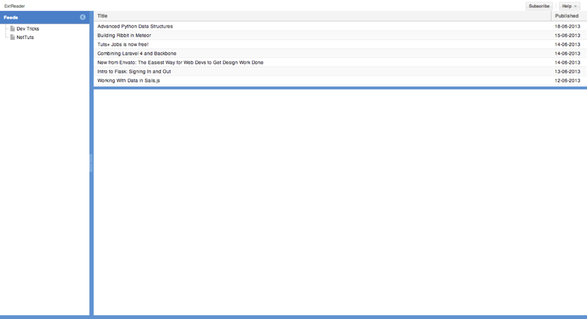

sencha which
Confirm your app looks like [lab1_classic]. It has the Classic theme by default and no specific app styling.

Open with your editor the following file /extreader/.sencha/app/sencha.cfg
Please note, the .sencha folder is a hidden folder. You need to change the visibility of hidden folders for your OS.
*Mac users*: + Make hidden files visible. To achieve this, type the following command in your terminal: + `defaults write com.apple.finder AppleShowAllFiles TRUE` + `killall Finder` + (running these commands with FALSE will disable showing hidden files again) *Windows users*: + TODO
Switch the app.theme to the out of the box Neptune theme:
# The name of the package containing the theme scss for the app
app.theme=ext-theme-classic
to
app.theme=ext-theme-neptune
Build the app, to see the changes:
Run the following command on the CLI, from the extreader folder:
sencha app build
Your ExtReader application should look like [lab1_neptune]:
